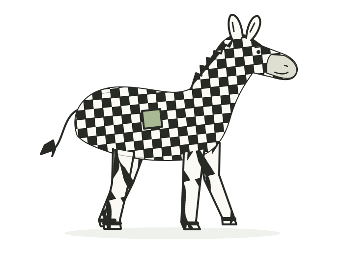

Действующий проект · авторский метод
Зебра
в клеточку.
Небольшой интерактивный опыт, который знакомит человека с авторским подходом Евгении Даныевой. Вместо долгого объяснения посетитель сразу пробует его на себе.

Какая клетка ваша?
Первый результат
за один выбор.
Что делает посетитель
Вытягивает одну из 30 карт. Дату рождения можно указать по желанию. Карта содержит наблюдение, вопрос об отличии и конкретный шаг на неделю.
Результат можно сохранить. Из карточки есть переход в MAX для разговора с Евгенией и ссылка на канал. После перехода к подписке становится доступна вторая карта; приложение не проверяет факт подписки через API.
Что здесь работает на знакомство
Авторская идея становится понятной через действие. У человека появляется личная тема для разговора, а приглашение на разбор связано с выбранной картой.
Это описание механики действующего проекта. Данных о количестве заявок и продаж в материалах нет, поэтому такие результаты здесь не заявлены.